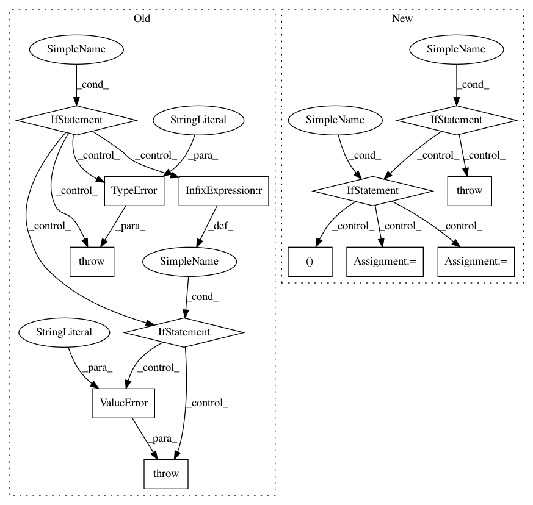

a902ddf5be91cb738efb1746847f74bb0f756ae2,prody/dynamics/perturb.py,,calcDynamicCouplingIndex,#Any#Any#Any#Any#,173
Before Change
*Biophys J.* **2015** 109(6):1273-81.
if not isinstance(prs_matrix, np.ndarray):
raise TypeError("prs_matrix should be a numpy array")
if prs_matrix.ndim != 2:
raise ValueError("prs_matrix should be 2-dimensional")
if not isinstance(atoms, Atomic):
raise TypeError("atoms should be an Atomic object")
if not isinstance(select, (str, Selection)):
After Change
*Biophys J.* **2015** 109(6):1273-81.
if not isinstance(model, NMA) or not model.is3d():
raise TypeError("model must be of type ANM or PCA, not {0}"
.format(type(model)))
if not isinstance(atoms, Atomic):
raise TypeError("atoms should be an Atomic object")
norm = kwargs.get("norm", False)
if norm:
prs_matrix, _, _ = calcPerturbResponse(model, atoms=atoms, **kwargs)
else:
prs_matrix = model.getCovariance()
if not isinstance(select, (str, Selection)):
raise TypeError("select should be a Selection or selection string")
if not isinstance(func_sel, (str, Selection)):
In pattern: SUPERPATTERN
Frequency: 3
Non-data size: 13
Instances
Project Name: prody/ProDy
Commit Name: a902ddf5be91cb738efb1746847f74bb0f756ae2
Time: 2021-02-01
Author: jamesmkrieger@gmail.com
File Name: prody/dynamics/perturb.py
Class Name:
Method Name: calcDynamicCouplingIndex
Project Name: prody/ProDy
Commit Name: a902ddf5be91cb738efb1746847f74bb0f756ae2
Time: 2021-02-01
Author: jamesmkrieger@gmail.com
File Name: prody/dynamics/perturb.py
Class Name:
Method Name: calcDynamicFlexibilityIndex
Project Name: brian-team/brian2
Commit Name: 65102dcc0cca9c1779955c12b523b07d1dc6d5ce
Time: 2019-02-13
Author: marcel.stimberg@inserm.fr
File Name: brian2/spatialneuron/spatialneuron.py
Class Name: SpatialNeuron
Method Name: spatialneuron_segment